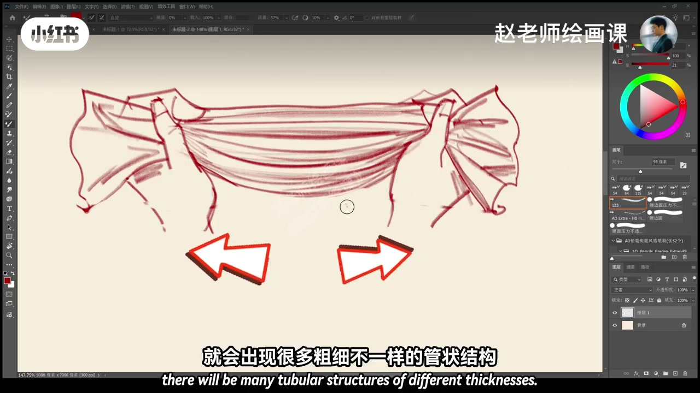
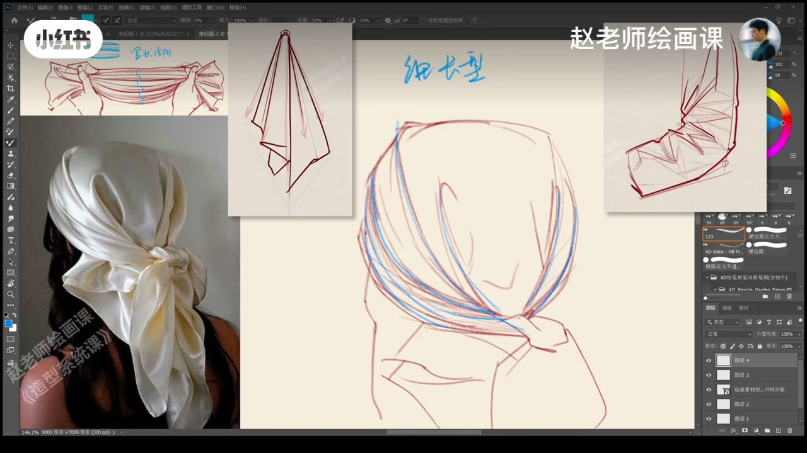
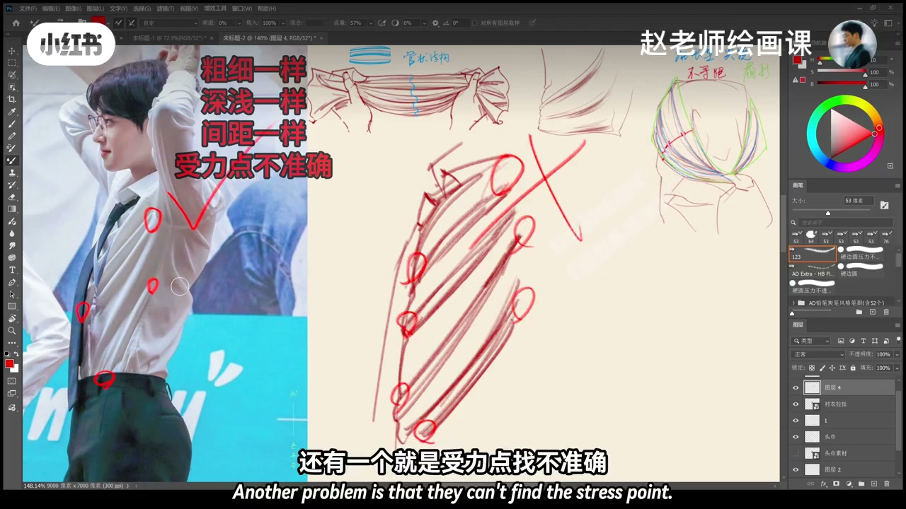
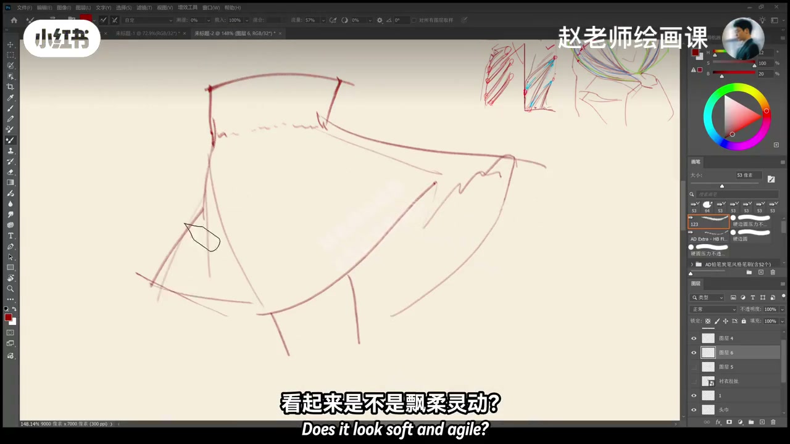

内容要点
接上期，讲动态感最强的两类褶皱：牵拉褶与封闭褶皱。双手抓住布两边外拉，中间出现粗细不等的管状结构——牵拉褶；头巾蝴蝶结与头顶两点对拉亦然。特征：细长、末端尖、非等距、整体如发散扇形；近拉点少而浅，远点深。记住它是拉出来的，不是压或推出来的，找准受力点是关键。常见翻车是粗细深浅间距都一样，或受力点不准。封闭／风褶随风向：迎风面紧绷贴身体现内部结构，背风面鼓起飘动，要用长而舒展的曲线，忌短碎线；边缘上扬有翻折边，间距较大；裙摆用锥体理解，别忘伟大的几何体。
知识结构
两端拉力→管状；扇形深浅梯度。
一样粗细深浅间距；受力点偏。
迎风贴身／背风舒展；裙摆锥体。
褶皱先问受力：牵拉找两点对拉与深浅梯度；风褶分迎风贴身与背风长曲线——平均画等于假。
00:00-01:05牵拉褶：管状与扇形
接着上一期，讲动态感最强的两类褶皱：牵拉褶和封闭褶皱。一块布双手抓住两边向外拉扯，中间会出现很多粗细不一样的管状结构，这就是牵拉褶皱。头巾后面蝴蝶结向后拉、头顶向前发力，两点同时拉扯也形成牵拉褶。
相比其他褶皱，它较细长、末端较尖、分布非等距，整体像发散扇形。靠近拉点褶皱少而浅，远离受力点更深更明显。记住：这种褶皱是拉出来的，不是压出来也不是推出来的，找准受力点是关键。00:18／00:40。


01:05-01:21牵拉褶怎么画假
有的同学容易画成粗细一样、深浅一样、分布又很平均；还有就是受力点找不准——当然不会生动好看。
01:15 误区板上打叉，对照正确扇形与受力点。

01:21-02:17封闭／风褶与裙摆锥体
第二种封闭褶皱压轴：看起来飘柔灵动，根据风的方向运动。风吹到的一面布料紧绷贴着身体，完全体现内部结构；背上的一面被鼓起飘动开来。这些褶皱一定要用长而舒展的曲线来画，切记短而碎的小线条；布料边缘会明显上扬，有非常生动的翻折边，褶皱间距比较大。
裙摆一定记得用一个锥体来理解，永远不要忘记伟大的几何体。这就是四种受力下衣褶的最底层逻辑。01:28 风褶示意。

完整转录（50段）
以下文本由 Whisper medium 模型自动转录，可能存在少量识别误差，已尽可能修正。
接着上一期
今天我们来讲动态感最强的两类褶皱
叫牵拉褶和封闭褶皱
这是一块布料
如果我们双手同时抓住两边
向外拉扯
布料中间就会出现很多苏西不一样的管状结构
这就是牵拉褶皱
来看这个头巾
后面的蝴蝶结在向后产生拉力
头顶也在向前发力
两点同时拉扯
也就形成了这种牵拉褶
很显然相比其他褶皱
这种褶皱是比较细长的
末端比较尖锐
分布也不是等距的
整体像一个发散的扇形
仔细看
靠近拉点的地方褶皱少而浅
远离受力点的褶皱深
也就是看起来比较明显
记住这种褶皱是拉出来的
不是压出来也不是推出来的
所以找准受力点是关键
有的同学在画这类褶皱的时候
容易把它画成粗细一样深浅一样
分布又很平均
还有一个就是受力点找不准去
当然不会生动好看
第二种
有请我们的锋利褶皱压轴登场
看起来是不是飘柔灵动
这种褶皱是根据风的方向来运动
风吹到的这一面
布料紧绷
贴着身体
完全是在体现内部的结构
而背上的一面被鼓起飘动开来
这些褶皱一定要用长而舒展的曲线来画
切记短而碎的小线条
布料的边缘会明显的上扬
它会有一个非常生动的翻折的边
褶皱之间间距比较大
对了裙摆一定要记得用一个锥体来理解
永远不要忘记伟大的几何性体
这就是四种受力下的医者的最底层逻辑
你最怕画哪一类医者呢
来评论区解决你的疑难杂症
拜拜